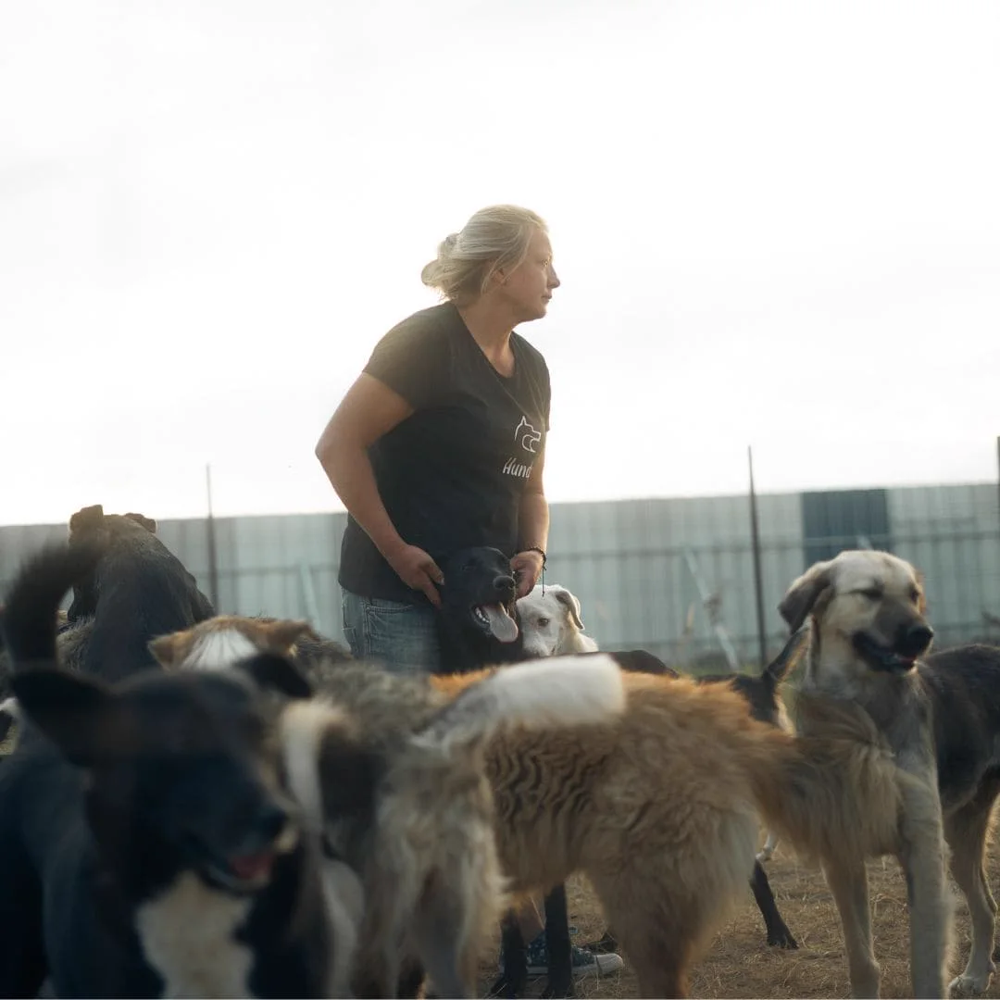
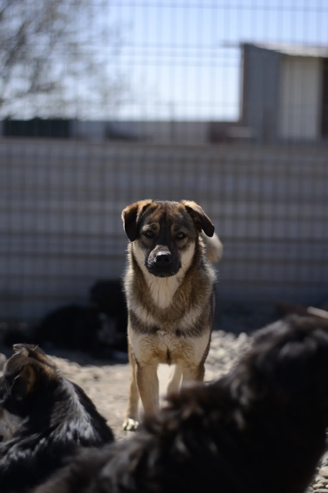

Europe4strays
Projects
What Mirela and her friends are building in Movilița, from the lodge to the operating table to the village school.
The big one
The Cheerful Kindergarten
The heart of everything: a lodge on the family's own land where the 350 dogs can live safely, started in 2020 with Mirela and Dragoș's savings and finished piece by piece with the friends' help. Fencing, water and electricity are done, the main building keeps improving, and the second building holds a puppy room, a quarantine area and storage.
Next on the plan: an education and training space, and a playground.


The long game
Castration campaigns
Sterilization is the only thing that ends the suffering at its source. Since 2018, Mirela and the partner associations organize regular castration actions in Vrancea: for shelter dogs, street dogs, and the pets of families who cannot afford the surgery themselves.
A breakthrough came in November 2024, when Tierschutzgruppe Herzensmenschen and Mirela met the mayor of Movilița: no new contracts with dog catchers are signed, the associations cover the castration costs of private dogs, and the mayor publicly backs the campaign.

In progress
The helpers' house
Right next to the shelter, a house for helpers is being built: room for several people, so that volunteers and vets can stay longer and help on site becomes sustainable instead of a rare visit. If you can imagine staying there one day, the volunteer section explains how to get in touch.
For the village
Easter in a shoebox
Animal welfare only lasts when the village is part of it. Together with the German friends, Mirela and Dragoș have several times brought "Easter in a shoebox" to the children of Movilița: lovingly packed parcels, handed over at a small celebration in the school or kindergarten. Trust built this way protects the dogs too.
Every single day
Food and daily care
The quietest project never stops: 350 dogs are fed, dewormed, vaccinated and treated every day, at Mirela's houses and at the lodge. Hunderunde supports this monthly and sends food transports, and every parcel and wishlist gift lands here.

Photo: Hunderunde
The happy endings
The road to a family
Every dog that can travel is vaccinated, chipped, sterilized and passported, then the friends take over: Tierschutzgruppe Herzensmenschen brings dogs to foster homes in Germany, Skayla Dog Rescue finds families in Sweden. From the streets of Vrancea to a sofa of their own.

Photo: Tierschutzgruppe Herzensmenschen